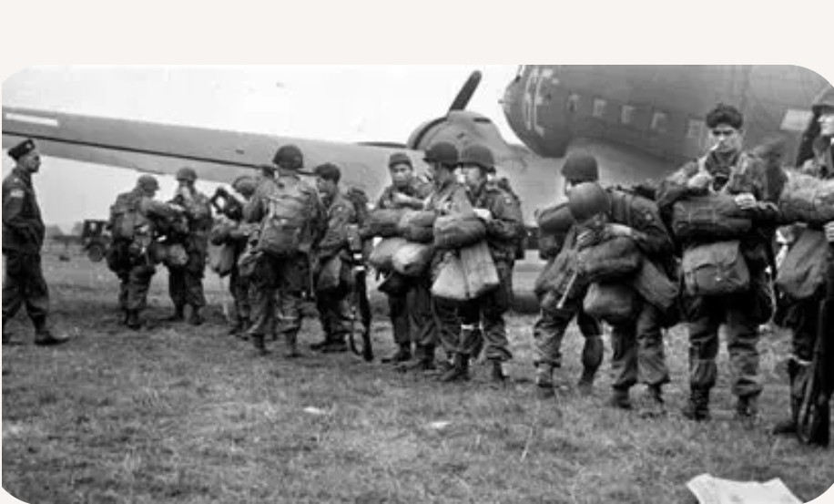

17 – 25 septembre 1944
Pays-Bas (Eindhoven, Nijmegen, Arnhem)
Alliés : États-Unis, Royaume-Uni, Pologne
Axe : Allemagne (Wehrmacht, SS)
Opération Market Garden est une offensive alliée ambitieuse visant à capturer une série de ponts stratégiques aux Pays-Bas afin d’ouvrir une route directe vers la Ruhr, cœur industriel de l’Allemagne. L’opération combine un assaut aéroporté massif (Market) et une avancée terrestre rapide (Garden).
Le 17 septembre, des milliers de parachutistes américains, britanniques et polonais sont largués derrière les lignes allemandes. Les premiers objectifs sont atteints, mais la progression terrestre est ralentie par la résistance allemande et des contre-attaques inattendues. À Arnhem, la 1st Airborne britannique se retrouve isolée et encerclée. Après neuf jours de combats acharnés, les Alliés doivent se replier.
Échec allié. Le pont d’Arnhem, objectif final, n’est pas tenu. L’avancée vers la Ruhr est stoppée.
Market Garden montre les limites des opérations aéroportées à grande échelle. L’échec retarde l’avancée alliée et prolonge la guerre en Europe.